Key Usage Scenarios
Walkthrough: Create evaluation company and import configuration package
About this walkthrough: Configuration package VAT-EVALUATION is to be imported into an evaluation company, in order to check the setup.
Roles: No specific user roles are required.
Story: You are Katrīna Pavlova, assigned by Cronus International to be a CFO in Cronus Latvia, SIA. The company runs business in the sphere of sales of furniture and rendering consultation services related to interior design upon request of local customers. Cronus Latvia, SIA is required to report VAT according to Latvia local requirements. You are assigned to test the settings on an evaluation company before adding the settings to Cronus Latvia, SIA.
Availability: can be accessed from Search for Page or Report…
Pre-requisites: No pre-requisites required
Create Evaluation Company
- Click on the button Search for Page or Report...

- Type Companies and select Companies from Lists 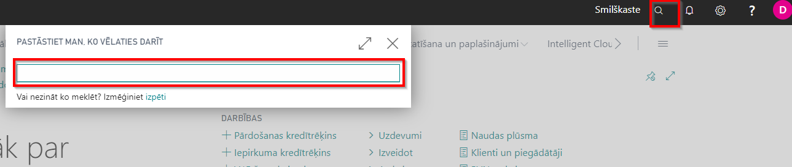
- Press New, select Create New Company, press Next

- Enter company name, for example, VAT-EVALUATION; set Evaluation-Sample Data in field Select the Data and Setup to Get Started
- Press Next, Next, Finish
- In My Settings, select your evaluation company
Import configuration package
- Click on the button Search for Page or Report...
- Type Config. Packages and select Config. Packages from Pages and Tasks

- Import Package VAT-EVALUATION 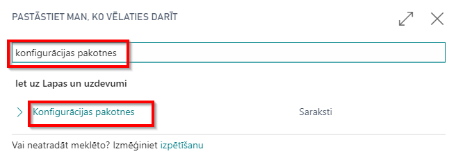
- Select VAT-EVALUATION package from list of Config. Packages and press Apply Package.

Configuration package VAT-EVALUATION consist of the following data:
- Countries/Regions - inserts currency codes for VAT Statement Appendix 1-2
- G/L Accounts - inserts additional accounts for Purchase VAT in Chart of Accounts for local reverse charge on purchases calculated and deducted
- Company information - inserts Registration No. in Company information for purposes of creating export file with VAT Return and export file for VAT Statement Appendix 3
- General Ledger Setup - inserts setup (grouping parameters and tags) for preparation of VAT Statement Appendix 1-1, 1-2, 1-3
- VAT Statement Template - inserts VAT Statement Report ID "70151475"
- VAT Statement Name - creates new VAT Statement "LV-VAT"
- VAT Statement Line - inserts VAT Statement Lines for VAT Statement LV-VAT
- No. Series - inserts new No. Series "LV-VAT-BUFF" for VAT Statement Appendix 1-1, 1-2, 1-3
- No. Series Line - inserts new No. Series Lines for No. Series "LV-VAT-BUFF"
- VAT Product Posting Group - inserts new VAT Product Posting Group "LV-VAT-REVERSE", that is used for local reverse charge items
- VAT Posting Setup - inserts related setup for VAT Product Posting Group "LV-VAT-REVERSE"
- VAT Reports Configuration - inserts predefined values for creation of VAT Statement Appendix 2 and VAT Return
Walkthrough: How to create VAT Buffer
About this walkthrough: VAT Buffer is used in order to prepare VAT Statement Appendixes
- VAT 1-1 Local purchase disclosure
- VAT 1-2 EU purchase disclosure
- VAT 1-3 Local sale disclosure
Roles: No specific user roles are required.
Story: You are Katrīna Pavlova, assigned by Cronus International to be a CFO in Cronus Latvia, SIA. The company runs business in the sphere of sales of furniture and rendering consultation services related to interior design upon request of local customers. Cronus Latvia, SIA is required to report VAT according to Latvia local requirements. You are assigned to test the settings on an evaluation company before adding the settings to Cronus Latvia, SIA. Your task is to:
- create purchase and sales transactions in a period, that has no entries yet
- prepare VAT Statement Appendixes
- VAT 1-1 Local purchase disclosure
- VAT 1-2 EU purchase disclosure
- VAT 1-3 Local sale disclosure
Availability: can be accessed from Search for Page or Report…
Pre-requisites: In order to use the functionality, the following pre-requisites are required:
Complete Setup
! Note that this setup is imported, when VAT-EVALUATION package is applied.
- Countries/Regions - inserts currency codes for VAT Appendix 1-2
- G/L Accounts - inserts additional accounts for Purchase VAT in Chart of Accounts for local reverse charge on purchases calculated and deducted
- Company information - inserts Registration No. in Company information for purposes of VAT Return
- General Ledger Setup - inserts setup for preparation of VAT Statement Appendix 1-1, 1-2, 1-3
- VAT Statement Template - inserts VAT Statement Report ID
- VAT Statement Name - creates new VAT Statement LV-VAT
- VAT Statement Line - inserts VAT Statement Lines for VAT Statement LV-VAT
- No. Series - inserts new No. Series LV-VAT-BUFF for VAT Statement Appendix 1-1, 1-2, 1-3
- No. Series Line - inserts new No. Series Lines for No. Series LV-VAT-BUFF
- VAT Product Posting Group - inserts new VAT Product Posting Group LV-VAT-REVERSE, that is used for local reverse charge items
- VAT Posting Setup - inserts related setup for VAT Product Posting Group LV-VAT-REVERSE
- VAT Reports Configuration - inserts predefined values for creation of VAT Statement Appendix 2 and VAT Return
Complete VAT Registration No. for Vendors
- Click on the button Search for Page or Report...
- Type Vendors and select Vendors from Lists
- Select Vendor 20000 and Edit Vendor's card
- Complete VAT Registration No. "GB123456789" for this particular Vendor

- Exit Vendor's card
- Select Vendor 40000 and Edit Vendor's card
- Complete VAT Registration No. "GB123456799" for this particular Vendor
- Exit Vendor's card
- Select Vendor 30000 and Edit Vendor's card
- Complete VAT Registration No. "DE123456799" for this particular Vendor
- Exit Vendor's card
Create Local Purchase Transaction where Purchase Invoice Total Excl. VAT >150.00 LCY
- Click on the button Search for Page or Report...
- Type Purchase Invoices and select Purchase Invoices from the Lists
- Create New Purchase Invoice
- Complete Vendor Name by inserting Vendor 20000, enter any period that is free from transactions as Posting date, enter 20000-01 as Vendor Invoice No.
- Complete Purchase Lines by inserting Item 1900-S, with quantity 10 and VAT Product Posting Group STANDARD
- Post document
Create Local Purchase Transaction where Purchase Invoice Total Excl. VAT <150.00 LCY
- Click on the button Search for Page or Report...
- Type Purchase Invoices and select Purchase Invoices from the Lists
- Create New Purchase Invoice
- Complete Vendor Name by inserting Vendor 20000, enter any period that is free from transactions as Posting date, enter 20000-02 as Vendor Invoice No.
- Complete Purchase Lines by inserting Item 1928-S, with quantity 1 and VAT Product Posting Group STANDARD
- Post document
Create Local Purchase Transactions where Purchase Invoice Total Excl. VAT <150.00 LCY and Total Amount per Counterparty is >150.00 LCY
- Click on the button Search for Page or Report...
- Type Purchase Invoices and select Purchase Invoices from the Lists
- Create New Purchase Invoice
- Complete Vendor Name by inserting Vendor 40000, enter any period that is free from transactions as Posting date, enter 40000-01 as Vendor Invoice No.
- Complete Purchase Lines by inserting Item 1908-S, with quantity 1 and VAT Product Posting Group STANDARD
- Post document
- Click on the button Search for Page or Report...
- Type Purchase Invoices and select Purchase Invoices from the Lists
- Create New Purchase Invoice
- Complete Vendor Name by inserting Vendor 40000, enter any period that is free from transactions as Posting date, enter 40000-02 as Vendor Invoice No.
- Complete Purchase Lines by inserting Item 1908-S, with quantity 1 and VAT Product Posting Group STANDARD
- Post document
Create Local Purchase Transactions where Purchase Invoice Total Excl. VAT <150.00 LCY and includes item that is subject to local reverse charge
- Click on the button Search for Page or Report...
- Type Purchase Invoices and select Purchase Invoices from the Lists
- Create New Purchase Invoice
- Complete Vendor Name by inserting Vendor 40000, enter any period that is free from transactions as Posting date, enter 40000-03 as Vendor Invoice No.
- Complete Purchase Lines by inserting Item 1964-S, with quantity 1 and VAT Product Posting Group LV-VAT-REVERSE
- Post document
Create 2 EU Purchase Transactions
- Click on the button Search for Page or Report...
- Type Purchase Invoices and select Purchase Invoices from the Lists
- Create New Purchase Invoice
- Complete Vendor Name by inserting Vendor 30000, enter any period that is free from transactions as Posting date, enter 30000-01 as Vendor Invoice No.
- Complete Purchase Lines by inserting Item 1953-W, with quantity 10, Unit Price Excl. VAT 40.00 LCY and VAT Product Posting Group STANDARD
- Post document
- Click on the button Search for Page or Report...
- Type Purchase Invoices and select Purchase Invoices from the Lists
- Create New Purchase Invoice
- Complete Vendor Name by inserting Vendor 30000, enter any period that is free from transactions as Posting date, enter 30000-02 as Vendor Invoice No.
- Complete Purchase Lines by inserting Item 1900-S, with quantity 1 and VAT Product Posting Group REDUCED
- Post document
Complete VAT Registration No. for Customers
- Click on the button Search for Page or Report...
- Type Customers and select Customers from Lists
- Select Customer 10000 and Edit Customer's card
- Complete VAT Registration No. "GB234567890" for this particular Customer
- Exit Customer's card
- Select Customer 30000 and Edit Customer's card
- Complete VAT Registration No. "DE234567890" for this particular Customer
- Exit Customer's card
Create Local Sale Transaction where Sales Invoice Total Excl. VAT >150.00 LCY
- Click on the button Search for Page or Report...
- Type Sales Invoices and select Sales Invoices from the Lists

- Create New Sales Invoice
- Complete Customer Name by inserting Customer 10000, enter any period that is free from transactions as Posting date, enter 10000-01 as External Doc. No.
- Complete Sales Lines by inserting Item 1900-S, with quantity 2 and VAT Product Posting Group STANDARD
- Post document
Create Local Sale Transaction where Sales Invoice Total Excl. VAT >150.00 LCY for a counterparty who is not registered as VAT payer
- Click on the button Search for Page or Report...
- Type Sales Invoices and select Sales Invoices from the Lists
- Create New Sales Invoice
- Complete Customer Name by inserting Customer 20000, enter any period that is free from transactions as Posting date, enter 20000-01 as External Doc. No.
- Complete Sales Lines by inserting Item 1900-S, with quantity 2 and VAT Product Posting Group STANDARD
- Post document
Create Local Sale Transaction where Sales Invoice Total Excl. VAT <150.00 LCY
- Click on the button Search for Page or Report...
- Type Sales Invoices and select Sales Invoices from the Lists
- Create New Sales Invoice
- Complete Customer Name by inserting Customer 10000, enter any period that is free from transactions as Posting date, enter 10000-02 as External Doc. No.
- Complete Purchase Lines by inserting Item 1928-S, with quantity 1 and VAT Product Posting Group STANDARD
- Post document
Create Local Sales Transactions where Sales Invoice Total Excl. VAT <150.00 LCY and includes item that is subject to local reverse charge
- Click on the button Search for Page or Report...
- Type Sales Invoices and select Sales Invoices from the Lists
- Create New Sales Invoice
- Complete Customer Name by inserting Customer 10000, enter any period that is free from transactions as Posting date, enter 10000-03 as External Doc. No.
- Complete Purchase Lines by inserting Item 1964-S, with quantity 1 and VAT Product Posting Group LV-VAT-REVERSE

- Post document
Create New VAT Buffer
- Click on the button Search for Page or Report...
- Type VAT Buffer and select VAT Buffer from Tasks

- VAT Buffer List - create New VAT Buffer 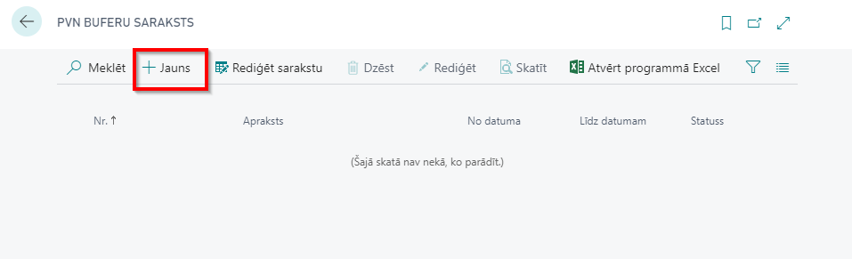
Complete General Fast Tab
- VAT Buffer No. should come automatically from General Ledger Setup. If it is not completed, enter the VAT Buffer No. manually
- Description - enter the description of the VAT Buffer, for example, "2020 April"
- From Date - enter period starting date for which the VAT Statement Appendix is prepared. For example, "01/04/2020"
- To Date - enter period starting date for which the VAT Statement Appendix is prepared. For example, "30/04/2020"

Complete Setup Fast Tab
- G/L Account No. Filter (Inland) - enter VAT Accounts that are used for local purchase transactions and inserted in VAT Posting Setup as Purchase VAT Accounts. Enter "5630|5632"
- G/L Account No. Filter (EU) - enter VAT Accounts that are used for EU purchase transactions and inserted in VAT Posting Setup as Purchase VAT Accounts. Enter "5633|5634"
- G/L Account No. Filter (Sales) - enter VAT Accounts that are used for local sales transactions and inserted in VAT Posting Setup as Sales VAT Accounts. Enter "5610"
- G/L Account No. Filter (Sales 0%) - enter Sales Accounts that are used for sales transactions with zero VAT rate. Enter "6110"
- Transaction Limit - enter the limit of transaction amount, below which the individual transactions should be grouped together; this limit may be entered in General Ledger Setup. Should be set to 150.00 LCY
- Partner Limit - enter the limit of transaction amount, above which the transactions should be grouped per Partner; this limit may be entered in General Ledger Setup. Should be set to 150.00 LCY
- Report Document - select which document number is to be used as Report Document No. and disclosed in VAT Statement Appendix "External Document No., Document No." or "Document No.". Should be set to "External Document No., Document No.".
- Group Partner By - select whether the entries should be grouped by "VAT Registration No."

Create Lines
- In the Ribbon press "Suggest Lines" function and OK

- The VAT Buffer gets populated by transaction lines, that contain the following information:
Analysis of Results
The following results are achieved:
- 1st line - local purchase with the Vendor Invoice No. 20000-01 is not grouped (checkmark in No Grouping field), because the Purchase Invoice Total Excluding VAT is >150.00 LCY, that is the set Transaction Limit in General Ledger Setup. Also this line has a Business Type "A", that comes from VAT Posting Setup as combination of VAT Business Posting Group "DOMESTIC" and VAT Product Posting Group "STANDARD". Business Type is used in VAT Statement Appendix 1-1.
- 2nd line - local purchase with the Invoice No. 40000-03 is not grouped (checkmark in No Grouping field), because the Purchase Invoice includes an item that is subject to reverse charge. VAT Posting Setup for combination of VAT Business Posting Group "DOMESTIC" and VAT Product Posting Group "LV-VAT-REVERSE" there is a checkmark "No Grouping in VAT Buffer" and reference to Business Type "R". Business Type. is used in VAT Statement Appendix 1-1.
- 3rd line - local purchase transactions for the Vendor with VAT Registration No. GB123456789 do not have a report document no., because individual transaction does not exceed the Transaction threshold of 150.00 LCY excl.VAT, but the total amount of transactions per counterparty exceeds Partner Limit 150.00 LCY. Therefore this line has Business Type "V", that comes from General Ledger Setup as transactions Business Type (Partner).
- 4th line - local purchase transactions are grouped and do not have Partner No. or Partner Name, because individual transactions do not exceed Transaction Limit of 150.00 LCY, neither they total up a sum of transactions that reach the Partner Limit. Therefore this line has Business Type "T", that comes from General Ledger Setup as transactions Business Type (w. Reg. No.).
- 5th line and 6th line - EU transactions are disclosed by invoices despite any thresholds. These entries are included in VAT Statement Appendix 1-2.
- 7th line - local sales with the Invoice No. 10000-01 is not grouped (checkmark in No Grouping field), because the Sales Invoice Total Excluding VAT is >150.00 LCY, that is the set Transaction Limit in General Ledger Setup. Also this line has a VAT Declaration Line No. "41", that comes from VAT Posting Setup as combination of VAT Business Posting Group "DOMESTIC" and VAT Product Posting Group "STANDARD". VAT Declaration Line No. is used in VAT Statement Appendix 1-3.
- 8th line - local sales with the Invoice No. 10000-03 is not grouped (checkmark in No Grouping field), because the Sales Invoice includes an item that is subject to reverse charge. VAT Posting Setup for combination of VAT Business Posting Group "DOMESTIC" and VAT Product Posting Group "LV-VAT-REVERSE" there is a checkmark "No Grouping in VAT Buffer" and reference to VAT Declaration Line No. "411". VAT Declaration Line No. is used in VAT Statement Appendix 1-3.
- 9th line - local sales transactions are grouped and do not have Partner No. or Partner Name, because Customer does not have a VAT Registration No. Therefore this line has Business Type "X", that comes from General Ledger Setup as transactions Business Type (wo. Reg. No.).
- 10th line - local sales transactions are grouped and do not have Partner No. or Partner Name, because individual transactions do not exceed Transaction Limit of 150.00 LCY, neither they total up a sum of transactions that reach the Partner Limit. Therefore this line has Business Type "T", that comes from General Ledger Setup as transactions Business Type (w. Reg. No.).
Additional Explanation for lines created
- Line Type - for VAT reporting purposes
- Inland - indicates Local purchases
- EU - indicates EU purchases
- Sales - indicates Local sales
- Line No.- line number
- G/L Entry No. - indicates GL entry number or is blank for several deals in one row
- VAT Entry No.- indicate VAT entry number or is blank for several deals in one row
- Posting Date - indicate posting date or is blank for several deals in one row
- Document Date- indicate date of the document or is blank for several deals in one row
- Transaction No. - indicate the number of transaction
- Skip Entry- if checked, then entry is not included for VAT reporting
- Report Document No. - number of the source document
- Document No. - number assigned by NAV
- External Document No.- external document number
- Document Type- indicates the type of the document
- Payment - in case VAT is calculated as a result of prepayment
- Invoice - in case VAT is calculated as a result of purchase/sales transaction
- Credit Memo - in case VAT is calculated as a result of purchase/sales return transaction
- Business Type- according to codes of Tax Administration
- Invoice Is Custom Declaration- displays the invoice as customs declaration in VAT buffer
- No Grouping - displays the selected entry without grouping
- EU 3-Party Trade- indicates whether the deal is classified as third party trade
- Yes
- No
- VAT %- indicates the VAT interest rate
- VAT Declaration Line No. - indicates the VAT declaration line number
- EU Service - indicates whether the deal is considered as service within EU
- Vendor No. - vendor number from Vendor List
- Customer No.- customer number from Customer List
- Partner No.- Partner number, if transactions involve Companies that are considered as one VAT Group
- Partner Name- Partner name
- Partner VAT Registration No.- Partner VAT No.
- Country/Region Code -
- Base Amount (LCY)- VAT taxable amount in Local currency
- VAT Amount (LCY)- VAT amount in Local currency
- Amount (LCY) - total amount in Local currency
- Currency Code - currency code
- Currency Factor- exchange rate, if deal currency differs from local currency
- Base Amount
- VAT Amount
- Amount
- Report Document Type
- Invoice
- Cash Payment
- Bank Payment
- Credit Memo
- Other
- Custom Declaration
- Group Line No. - group line number within Group level
- Grouping Level No. - group level number
- System-Created- checked if line is suggested by Latvian VAT Reporting Localization, unchecked if user made modifications to line
Print VAT Statement Appendix 1-1, 1-2, 1-3
- VAT Buffer status needs to be set to Released, using "Release" button in the Ribbon.
- In the Ribbon press "Print VAT Appendix"

- Select "Prepared by" - select "AH" - the responsible employee, who prepared the VAT Statement Appendix from the list of Employees. By selecting "Prepared by", Employee card data are re-used: Name, Surname, Job title, Phone No.
- VAT Statement Appendix can be sent to Preview or printed as PDF, Excel, Word.
Walkthrough: How to create EC Sales Report
About this walkthrough: EC Sales List Report is used, in order to prepare VAT Statement Appendixes VAT 2 EU sales disclosure
Roles: No specific user roles are required.
Story: You are Katrīna Pavlova, assigned by Cronus International to be a CFO in Cronus Latvia, SIA. The company runs business in the sphere of sales of furniture and rendering consultation services related to interior design upon request of local customers. Cronus Latvia, SIA is required to report VAT according to Latvia local requirements. You are assigned to test the settings on an evaluation company before adding the settings to Cronus Latvia, SIA. Your task is to:
- create sales transactions for Customers located in EU
- prepare VAT Statement Appendix VAT 2 EU sale disclosure
Availability: can be accessed from Search for Page or Report
Pre-requisite: in order to use the functionality, the following pre-requisites are required:
Complete Setup ! Note that this setup is imported, when VAT-EVALUATION package is applied.
- VAT Reports Configuration - inserts predefined values for creation of VAT Statement Appendix 2 and VAT Return
- VAT Report Setup - No. Series should be completed for creation of EC Sales List Reports
Complete VAT Registration No. for Customers
Click on the button Search for Page or Report...
Type Customers and select Customers from Lists
Select Customer 40000 and Edit Customer's card
Complete VAT Registration No. "DE234567890" for this particular Customer
Exit Customer's card
Create EU Sales Transactions
- Click on the button Search for Page or Report...
- Type Sales Invoices and select Sales Invoices from the Lists
- Create New Sales Invoice
- Complete Customer Name by inserting Customer 40000, enter any period that is free from transactions as Posting date, enter 40000-01 as External Doc. No.
- Complete Sales Lines by inserting Item 1900-S, with quantity 1 and VAT Product Posting Group STANDARD
- Post document
- Click on the button Search for Page or Report...
- Type Sales Invoices and s from the Lists
- Create New Sales Invoice
- Complete Customer Name by inserting Customer 40000, enter any period that is free from transactions as Posting date, enter 40000-02 as External Doc. No.
- Complete Sales Lines by inserting Item 1920-S, with quantity 1 and VAT Product Posting Group REDUCED
- Post document
Create New EC Sales List Reports VAT Statement Appendix VAT 2 EU sales disclosure
- Click on the button Search for Page or Report...
- Type EC Sales List Reports and select Sales List Reports from Reports and Analysis 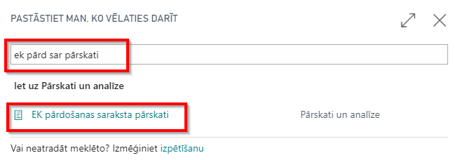
- EC Sales List Reports - create New EC Sales List Report 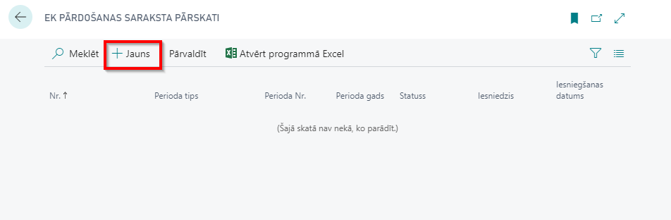
Complete General Fast Tab
- No. should come automatically from VAT Report Setup. If it is not completed, enter the No. Series manually
- VAT Report Version - select EC Sales List Report Version
- VAT Report Type
- Standard - for VAT Statement Appendix VAT2
- Period Year - enter "2020
- Period Type - select "Month"
- Period No. - enter "4"
Create Lines
- In the Ribbon press "Suggest Lines" function

Analysis of Results
The following results are achieved:
- 1st line - EU sales transaction with Customer, where B2B Goods are sold
- 2nd line - EU sales transaction with Customer, where B2B Services are sold
Additional Explanation for lines created
- Line No.- report Row No.
- Report No. - indicates EC Sales List Report No.
- Country Code
- Customer VAT. Reg. No. - indicates Customer VAT Registration No.
- Total Value of Supplies
- Transaction Indicator - specifies B2B Goods or B2B Services
- Line Type - specifies whether the line is new, corrective or cancelled
Print VAT Statement Appendix 2
- EC Sales List Report status needs to be set to Released, using "Release" button in the Ribbon.
- In the Ribbon press "Print"
- Select "Prepared by" - select "AH"- the responsible employee, who prepared the VAT Statement Appendix from the list of Employees. By selecting "Prepared by", Employee card data are re-used: Name, Surname, Job title, Phone No.
- VAT Statement Appendix can be sent to Preview or printed as PDF, Excel, Word.
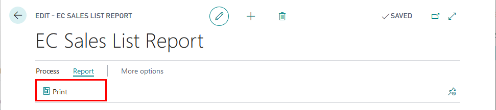

Walkthrough: How to create and print VAT Statement
About this walkthrough: VAT Statement is used to set filters for VAT or General Ledger Entries, in order to prepare VAT Return.
Roles: No specific user roles are required.
Story: You are Katrīna Pavlova, assigned by Cronus International to be a CFO in Cronus Latvia, SIA. The company runs business in the sphere of sales of furniture and rendering consultation services related to interior design upon request of local customers. Cronus Latvia, SIA is required to report VAT according to Latvia local requirements. You are assigned to test the settings on an evaluation company before adding the settings to Cronus Latvia, SIA. Your task is to:
- create sales transaction that is subject to VAT 0% for local Customer
- prepare VAT Statement
Availability: can be accessed from Search for Page or Report
Pre-requisite: in order to use the functionality, the following pre-requisites are required:
Completed Setup ! Note that this setup is imported, when VAT-EVALUATION package is applied.
- VAT Statement Template
- VAT Statement
- VAT Statement Lines
All transactions listed in previous walkthroughs
- Local purchases
- EU purchases
- Local sales
- EU sales
Create sales transaction that is subject to VAT 0% for local Customer
- Click on the button Search for Page or Report...
- Type Sales Invoices and select Sales Invoices from the Lists
- Create New Sales Invoice
- Complete Customer Name by inserting Customer 10000, enter any period that is free from transactions as Posting date, enter 10000-04 as External Doc. No.
- Complete Sales Lines by inserting G/L Account 6710, with quantity 1 and VAT Product Posting Group ZERO, Unit Price Excl.VAT 100.00 LCY
- Post document
Print VAT Statement
- Click on the button Search for Page or Report...
- Type VAT Statements and select VAT Statements from Tasks 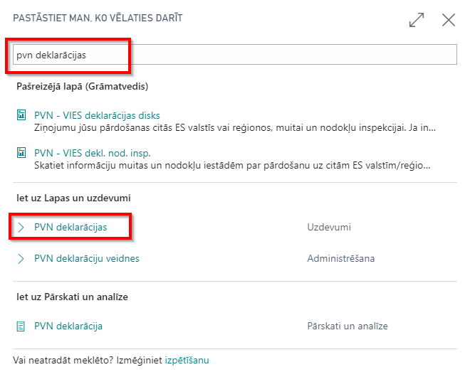
- Select Batch Name - LV-VAT, and press OK 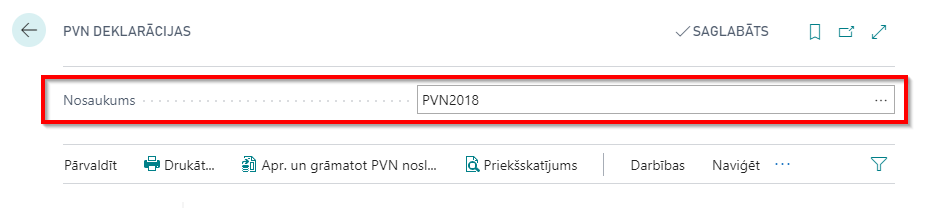
- Press Print
- Complete Printing Options:
- Year - enter year of the reporting period. Enter "2020"
- Period Type - select period type. Select "Month"
- Period No. - enter period no.. Enter "4"
- Prepared By- select "AH"- the responsible employee, who prepared the VAT Statement Appendix from the list of Employees. By selecting "Prepared by", Employee card data are re-used: Name, Surname, Job title, Phone No.; Select "AH"
Optional fields that are to be used only on condition when VAT Statement lines are based on VAT entries
- Include VAT Entries - should be used, if only VAT Statement is based on VAT Entries
- Open
- Closed
- Open and Closed - recommended option
- Include VAT Entries - should be used, if only VAT Statement is based on VAT Entries
- Before and Within Period
- Within Period - recommended option
- Review the VAT Statement printed
Analysis of Results
Note
Only LV specific rows are analyzed.
- G/L Amount type - is used in Row No. 1020 (not visible on the printout) and set to "Debit", so that only debit amounts are included in the filter
- Math - is used in Row No. 1030 (not visible on the printout) and Row No.66
Row No. 1030 calculates the ratio between Row No.49 and Row No.40.
Row No. 66 uses the calculated ratio and applies it to Row No.1040
- Rounding Type for Row No. 1030 is set to "Up", so that the ratio calculated is rounded up for further calculus.
- Round To for Row No. 1030 is set to "1.00", because it needs to be rounded to whole per cents.
- Zero if - is used for Row No. 70 and Row No. 80
Row No. 70 (tax amount to be repaid from the State) is printed as "0.00" if the calculated value is negative.
Row No. 80 (tax amount to be paid to the State) is printed as "0.00" if the value calculated is positive
Walkthrough: How to export prepare VAT Statement together with VAT Statement Appendixes 1-1, 1-2, 1-3, 2 for Electronic Declaration System
About this walkthrough: VAT Statement is used to set filters for VAT or General Ledger Entries, in order to prepare VAT Return. Roles: No specific user roles are required.
Story: You are Katrīna Pavlova, assigned by Cronus International to be a CFO in Cronus Latvia, SIA. The company runs business in the sphere of sales of furniture and rendering consultation services related to interior design upon request of local customers. Cronus Latvia, SIA is required to report VAT according to Latvia local requirements. You are assigned to test the settings on an evaluation company before adding the settings to Cronus Latvia, SIA. Your task is to:
- prepare VAT Return
- export VAT Return with VAT Buffer and EC Sales List Report to EDS
Availability: can be accessed from Search for Page or Report…
Pre-requisites: In order to use the functionality, the following steps are required:
- Export of VAT Return requires Company Registration No. to be completed in Company information.
- VAT Statement template - VAT Statement Report ID - 70151475
Completed Setup ! Note that this setup is imported, when VAT-EVALUATION package is applied.
- VAT Statement
- VAT Statement Template
- VAT Report Setup
- VAT Reports Configuration

Steps:
- Click on the button Search for Page or Report...
- Type VAT Return and select VAT Return from Reports and Analysis

- VAT Returns List - create VAT Return

Complete General Fast Tab
- No. should come automatically from VAT Report Setup. If it is not completed, enter the No. Series manually
- Version - select Report Version
- Period Year - is completed by Suggest Lines Process
- Period Type - is completed by Suggest Lines Process
- Period No. - is completed by Suggest Lines Process
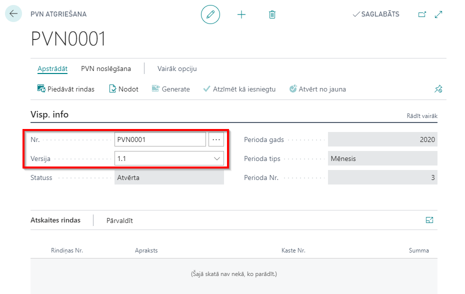
Create Lines
- In the Ribbon press "Suggest Lines" function 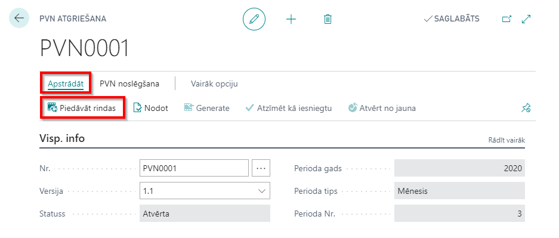
- Complete the Criteria
- Include VAT Entries - set to Open and Closed
- Include VAT Entries - set to Within Period
- VAT Statement Template - set to VAT
- VAT Statement Name - set to LV-VAT
- Period Year - enter "2020"
- Period Type - select period type "Month"
- Period No. - enter period no. "4"
- Start Date - completed by system from the criteria chosen above
- End Date - completed by system from the criteria chosen above
Explanation for lines created
- Row No. - lines of VAT Statement that correspond to Line No.
- Description - description from VAT Statement Lines
- Box No. - lines of VAT Statement that correspond to Box No.; line code according to Electronic Declarations System
- Amount - line amount 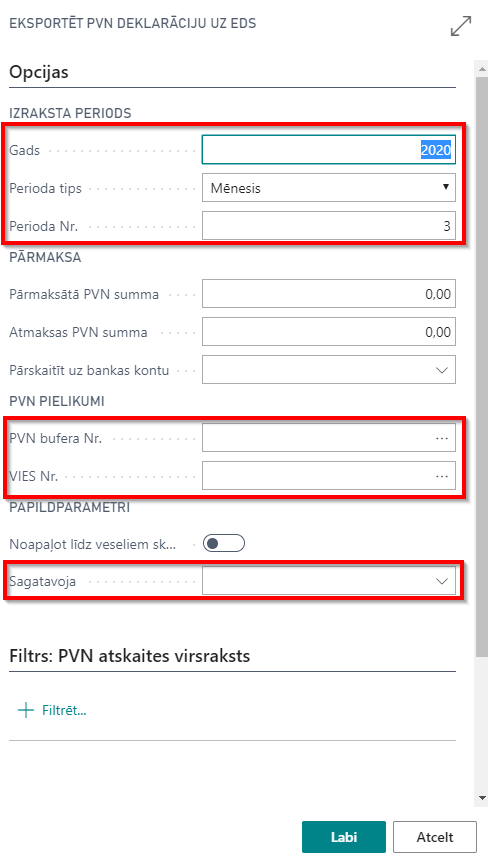
Export VAT Return with Appendixes to EDS
- VAT Return status needs to be set to Released, using "Release" button in the Ribbon.
- In the Ribbon press "Submit"
- Complete Export Options: 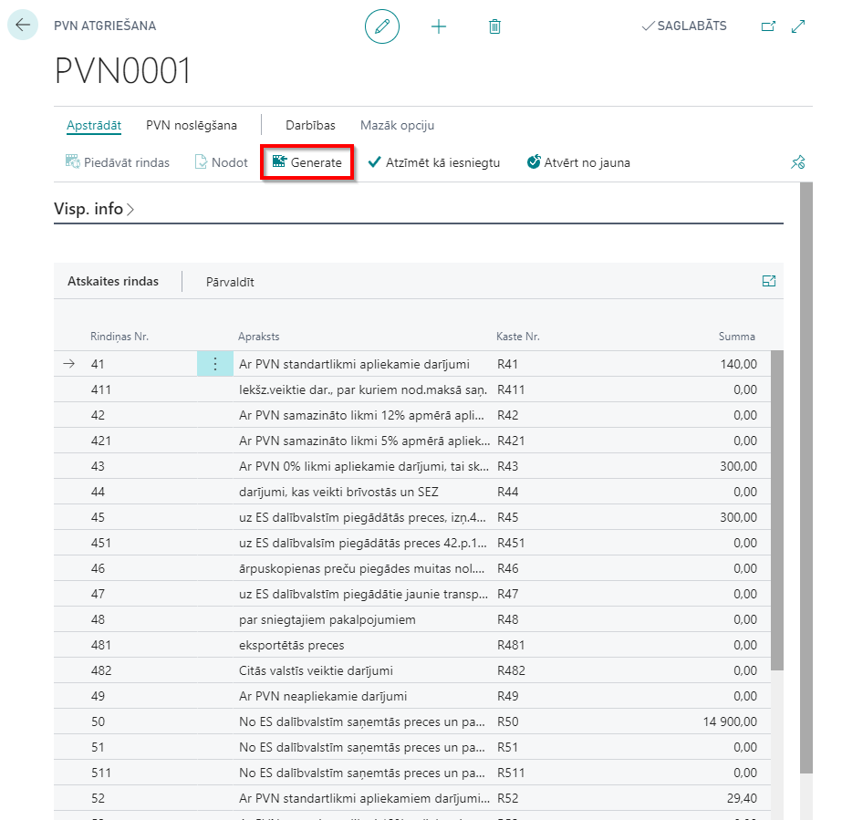
- Year - enter "2020"
- Period Type - select period type "Month"
- Period No. - enter period no. "4"
- Overpaid VAT Amount - this can be completed manually, if only needed to appear on the printout; this amount can be entered in Electronic Declaration System directly; optional field
- Refund VAT Amount - this can be completed manually, if only needed to appear on the printout; this amount can be entered in Electronic Declaration System directly; optional field
- Transfer to Bank Account - select a bank account to which the State Revenue Service should transfer the amount you would like to be refunded by the State; optional field
- VAT Buffer No. - select the VAT Buffer (VAT Buffer should be in status released and be within the reporting filter that is set above)
- VIES No. - select the EC Sales Report (EC Sales Report should be in status released and be within the reporting filter that is set above)
- Round to Whole Numbers - disabled for Latvia
- Show Amount in Additional Reporting Currency - should be used, if only EUR is not the Local Currency of the Company
- Prepared By- select "AH"- the responsible employee, who prepared the VAT Statement Appendix from the list of Employees. By selecting "Prepared by", Employee card data are re-used: Name, Surname, Job title, Phone No.

- Select Save, in order to save the file for further upload to EDS 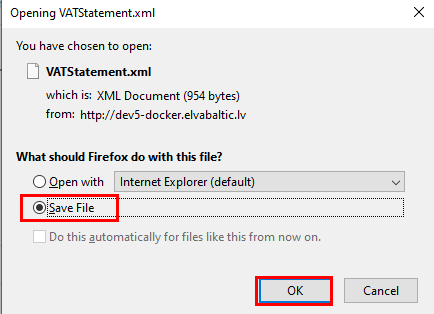
Walkthrough: How to create EC Sales Report Correction
About this walkthrough: EC Sales List Report is used, in order to prepare VAT Statement Appendixes VAT 3 Correction of EU sales disclosure
Roles: No specific user roles are required.
Story: You are Katrīna Pavlova, assigned by Cronus International to be a CFO in Cronus Latvia, SIA. The company runs business in the sphere of sales of furniture and rendering consultation services related to interior design upon request of local customers. Cronus Latvia, SIA is required to report VAT according to Latvia local requirements. You are assigned to test the settings on an evaluation company before adding the settings to Cronus Latvia, SIA. Your task is to:
- create sales transaction for Customers located in EU
- prepare VAT Statement Appendix VAT 3 Correction of EU sale disclosure
Availability: can be accessed from Search for Page or Report
Pre-requisite: in order to use the functionality, the following pre-requisites are required:
Complete Setup ! Note that this setup is imported, when VAT-EVALUATION package is applied.
- VAT Reports Configuration - inserts predefined values for creation of VAT Statement Appendix 3 and VAT Return
- VAT Report Setup - No. Series should be completed for creation of EC Sales List Reports
Create EU Sales Transactions
- Click on the button Search for Page or Report...
- Type Sales Invoices and select Sales Invoices from the Lists
- Create New Sales Invoice
- Complete Customer Name by inserting Customer 40000, enter any period that is free from transactions as Posting date, enter 40000-03 as External Doc. No.
- Complete Sales Lines by inserting Item 1896-S, with quantity 1 and VAT Product Posting Group STANDARD
- Post document
Create New EC Sales List Reports VAT Statement Appendix VAT 3 Correction of EU sales disclosure
- Click on the button Search for Page or Report...
- Type EC Sales List Reports and select Sales List Reports from Reports and Analysis
- EC Sales List Reports - create New EC Sales List Report
Complete General Fast Tab
- No. should come automatically from VAT Report Setup. If it is not completed, enter the No. Series manually
- VAT Report Version - select EC Sales List Report Version
- VAT Report Type
- Corrective - for VAT Statement Appendix VAT3
- Original Report No. - enter "ECSL-0001"
- Period Year - enter "2020
- Period Type - select "Month"
- Period No. - enter "4"
Create Lines
- In the Ribbon press "Suggest Lines" function
Analysis of Results
The following results are achieved:
- 1st line - EU sales transaction with Customer, where B2B Goods were sold and included in the original report is fully cancelled with the same parameters as it was declared
- 2nd line - new line is created, that includes previous posted amount and new posted amounts of EU sales transaction with Customer, where B2B Goods were sold
Additional Explanation for lines created
- Line No.- report Row No.
- Report No. - indicates EC Sales List Report No.
- Country Code
- Customer VAT. Reg. No. - indicates Customer VAT Registration No.
- Total Value of Supplies
- Transaction Indicator - specifies B2B Goods or B2B Services
- Line Type - specifies whether the line is new, corrective or cancelled
Print VAT Statement Appendix 3
- EC Sales List Report status needs to be set to Released, using "Release" button in the Ribbon.
- In the Ribbon press "Print"
- Select "Prepared by" - select "AH"- the responsible employee, who prepared the VAT Statement Appendix from the list of Employees. By selecting "Prepared by", Employee card data are re-used: Name, Surname, Job title, Phone No.
- VAT Statement Appendix can be sent to Preview or printed as PDF, Excel, Word.
Submit VAT Statement Appendix 3 Correction of EU sale disclosure
- EC Sales List Report status needs to be set to Released, using "Release" button in the Ribbon.
- In the Ribbon press "Submit"
- Select "Prepared by" - select "AH"- the responsible employee, who prepared the VAT Statement Appendix from the list of Employees. By selecting "Prepared by", Employee card data are re-used: Name, Surname, Job title, Phone No.
- VAT Statement Appendix can be sent to Electronic Declaration System